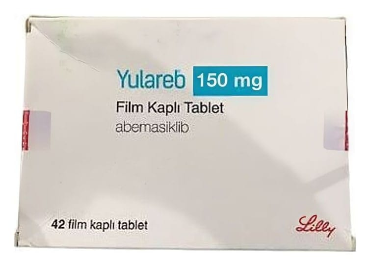

Yulareb 150 mg Film Kaplı Tablet, 42 Adet

Ne için kullanılır
KT · Bölüm 1YULAREB, bir tarafında “Lilly”, diğer tarafında “150” oyması bulunan sarı, modifiye oval tablettir. YULAREB, 28, 42 veya 56 film kaplı tablet içeren takvimli blister ambalajlarda bulunur. Tüm ambalaj boyutlarında pazarlanmayabilir.
YULAREB, etkin madde olarak abemasiklib içeren bir anti-kanser ilacıdır. Abemasiklib, bazı kanser hücrelerinde anormal ölçüde aktif olan ve bu hücrelerin kontrol dışı büyümesine yol açan siklin bağımlı kinaz 4 ve 6 adlı proteinleri bloke ederek etki gösterir. Bu proteinlerin sürekli olarak bloke edilmesi kanser hücrelerinin büyümesini yavaşlatabilir, tümörü küçültebilir ve kanserin ilerlemesini geciktirebilir. YULAREB, endokrin tedavi ile kombinasyon halinde, hormon reseptörü (HR) pozitif, insan epidermal büyüme faktörü reseptörü 2 (HER2) negatif, nüks riski yüksek erken evre meme kanseri olan yetişkin hastaların koruyucu (adjuvan) tedavisinde endikedir. YULAREB, iki yıl boyunca veya hastalığın nüksüne dek veya kabul edilemez toksisite gelişene dek sürekli olarak alınmalıdır. Nüks riski yüksek olan hastalarda aşağıdaki klinik ve patolojik özelliklerin bulunması gerekmektedir: - 4 veya daha üzeri aksiller lenf nodu metastazı olan veya - 1-3 lenf nodu pozitifliği olan hastalarda tümörü > 5 cm veya Ki-67 ≥ %20 veya tümörün derece 3 olması gerekmektedir. YULAREB, - Letrozol veya anastrozol ile kombinasyon halinde, özel bir tipte (en az % 10 östrojen reseptörü pozitif ve insan epidermal büyüme faktörü reseptörü 2 (HER2) negatif) menopoz sonrası (postmenopozal) yayılmış (metastatik) meme kanseri olan, koruyucu (adjuvan) tedavinin tamamlanmasından 12 ay sonra hastalığı tekrarlamış ya da ileri evre meme kanseri için daha önce hiçbir hormonal tedavi almamış hastalarda endikedir.
- Fulvestrant ile kombinasyon halinde, en az % 10 östrojen reseptörü pozitif ve insan epidermal büyüme faktörü reseptörü 2 (HER) negatif postmenopozal metastatik meme kanseri olan, fulvestrant ile tedavi edilmemiş hastalarda endikedir,
1- Metastatik hastalığın tedavisi için en az 6 ay boyunca ve en az bir basamak aromataz inhibitörü aldıktan sonra klinik ve/veya radyolojik olarak hastalığın ilerlemesi durumunda fulvestrant ile kombinasyon halinde,
2- En az 12 ay boyunca adjuvan aromataz inhibitörü tedavisi aldıktan sonra veya adjuvan aromataz inhibitörü tedavisini tamamladıktan sonraki 12 ay içinde hastalığı tekrarlayan hastalarda fulvestrant ile kombinasyon halinde kullanılır.
a) Adjuvan aromataz inhibitörü grubundaki ilaç tedavisinin ilk 12 ayı içinde hastalığı tekrarlayan hastalarda kullanılmaz.
b) Metastatik hastalık için bir sıradan daha fazla aromataz inhibitörü grubundaki ilaçlardan almış hastalarda kullanılmaz.
Sizinle aynı hastalığı olan hastalardan ve ailelerinden oluşan destek grupları bulunabilir; size yardımcı olabilecek bu tür bir grubun bulunup bulunmadığını doktorunuza veya hemşirenize sorunuz.